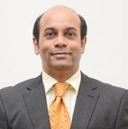

Dr. Alaric Aroojis
Consultant, Paediatric Orthopaedics
Name
Dr. Alaric Aroojis
Designation
Consultant, Paediatric Orthopaedics
Qualifications
MBBS, D'Orthopaedics, MS (Orthopaedics), DNB (Orthopaedics)
Speciality Interests
Paediatric Orthopaedics including congenital anomalies, cerebral palsy and deformity correction

Experience
Dr. Alaric Aroojis is one of the leading authorities in the country on the treatment of clubfoot by conservative & surgical methods. He is one of the few Paediatric Orthopaedic surgeons in the country to perform complex pelvic osteotomies for congenital hip dislocation and to use minimally invasive techniques to correct difficult limb deformities in children. At Kokilaben Dhirubhai Ambani Hospital, he straddles two Centres of Excellence - the Centre for Bone & Joint Surgery and the Centre for Children. He is an integral part of the multi-disciplinary Spina Bifida & Cerebral Palsy Clinics and works in close association with Paediatric & Rehabilitation specialists. The Cerebral Palsy Clinic offers advanced Orthopaedic & Rehabilitation care for children with cerebral palsy by various treatment modalities, such as neuro-developmental therapy, Botulinum injections, multi-level soft tissue surgery and advanced evaluation by Instrumented Gait Analysis, the first of its kind in the city.
After completing his medical school and Orthopaedic residency from the premier King Edward VII Memorial Hospital, Mumbai, he worked as a Specialist Registrar at the B. J. Wadia Hospital for Children where his interest in Paediatric Orthopaedics was kindled. He subsequently completed accredited Fellowship training in Paediatric Orthopaedics at the Alfred duPont Hospital for Children, USA, which has the largest Paediatric Orthopaedic program in North America; the National University Hospital, Singapore and the Royal Children's Hospital, Australia. He has also visited several centres in USA, Europe and Australia for advanced training in Paediatric Orthopaedics.
KH Experience
Dr Alaric Aroojis is a Paediatric Orthopaedic Surgeon who did his training in Orthopaedic Surgery in Mumbai and Fellowships in Paeditric Orthopaedic Surgery from USA,UK & Australia.
Paediatric orthopaedics is exclusively practiced by only about 20 Orthopaedic Surgeons in the whole country.
Dr Aroojis has done more than 700 Paediatric Orthopaedic Surgeries at Kokilaben Hospital over the last four years. These include advanced procedures like Correction of Congenital Talipes Equinovarus (Club Foot),Corrective Surgery for Cerebral Palsy and Complex Paediatric Trauma.
State-of-the-art care for Paediatric Trauma is offered using Minimally Invasive Fixation techniques such as Titanium Elastic Nails & AO Implants.
He is one of the leading exponents of the Ponseti Method of Clubfoot treatment and the only Indian to be nominated to the prestigious Medical Advisory Board of the Ponseti International Association. About 30 new Clubfeet children are seen by him every year and he has successfully treated patients from different parts of the country as well as international patients from Dubai, Nigeria & Jamaica who have travelled all the way to our hospital in the past 4 years.
There are very few Specialists in the country who have performed Complex Hip Reconstructive Surgeries such as Triple Innominate Osteotomy for Adolescent Hip Dysplasia and Safe Surgical Hip Dislocation for Slipped Capital Femoral Epiphysis. These are highly specialized surgeries which are provided in very few advanced centres and we get referrals from several parts of the country.
In conjunction with our Plastic Surgeons he has operated on congenital hand deformities
He has successfully corrected complex limb deformities in patients referred from different parts of the country using the latest methods of Growth Modulation & Fixators such as Orthofix & Ilizarov.
In addition,he has a a strong Academic & Research interest and has to his credit 18 International Publications and 22 National Publications related to Pediatric Orthopaedics & Rehabilitation. He has authored a chapter in the world-renowned Rockwood & Wilkins' Textbook of "Fractures in Children", 5th Ed 2001 & 6th Ed 2006 and has served as Section Editor for the prestigious Infectious Disease Atlas published by the Indian Association of Paediatricians 2012.
He has presented over 50 scientific papers related to Pediatric Orthopaedics at various National and International conferences, and has been the recipient of several prestigious awards and scholarships. Notable among these are the Pediatric Orthopaedic Travelling Fellowship awarded by the Asia Pacific Orthopaedic Association (APOA) in 2004, International Scholarships awarded by the American Academy for Cerebral Palsy & Developmental Medicine (AACPDM) in 2007 & 2012, the Scoliosis Research Society in 2007 and SICOT scholarships in 2002, 2005 & 2007.
He has been invited as International Faculty to lecture at several countries abroad such as Singapore, Malaysia, Philippines, Nepal, Bangladesh, Pakistan, and Sri Lanka.
He serves as Executive Member, International Affairs Committee, American Academy for Cerebral Palsy & Developmental Medicine (AACPDM) 2012 - 2015.
Achievement
ACADEMICS/RESEARCH/AWARDS
Dr. Alaric Aroojis has a strong academic & research interest and has more than 12 International publications and 20 national publications related to Paediatric Orthopaedics & Rehabilitation. He has authored a chapter in the world-renowned Rockwood & Wilkins' Textbook of 'Fractures in Children', 5th Ed 2001 & 6th Ed 2006. He has presented over 50 scientific papers related to Paediatric Orthopaedics at various national and international conferences, and has been the recipient of several prestigious awards and scholarships. Notable among these are Paediatric Orthopaedic Travelling Fellowship awarded by the Asia - Pacific Orthopaedic Association (APOA) in 2004, International Scholarships awarded by the American Academy for Cerebral Palsy & Developmental Medicine (AACPDM) and the Scoliosis Research Society (SRS) in 2007 and SICOT scholarships in 2002, 2005 and 2007. He has also delivered lectures as Member of Faculty at over 50 seminars and conferences in India and abroad. Dr. Aroojis is an active member of the Indian Orthopaedic Association, the Bombay Orthopaedic Society and the Paediatric Orthopaedic Society of India. He currently balances his teaching commitments and academic research with a busy clinical practice in Paediatric Orthopaedics.